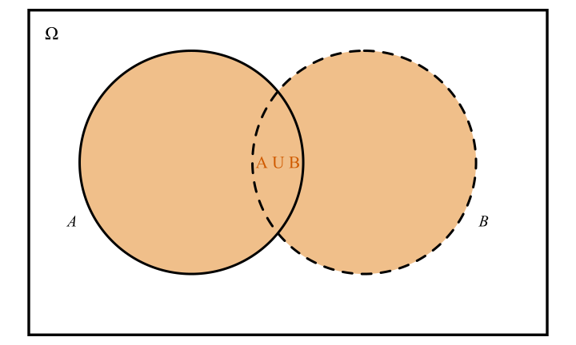
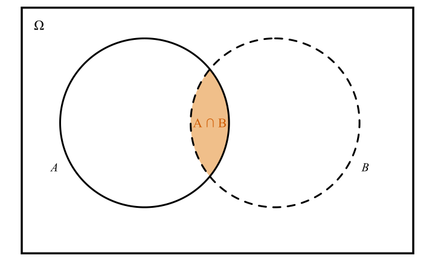
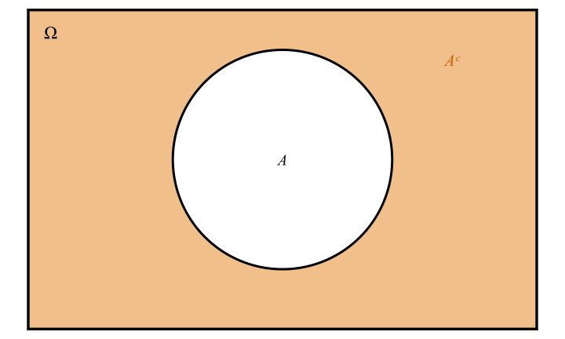
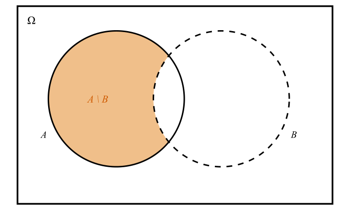
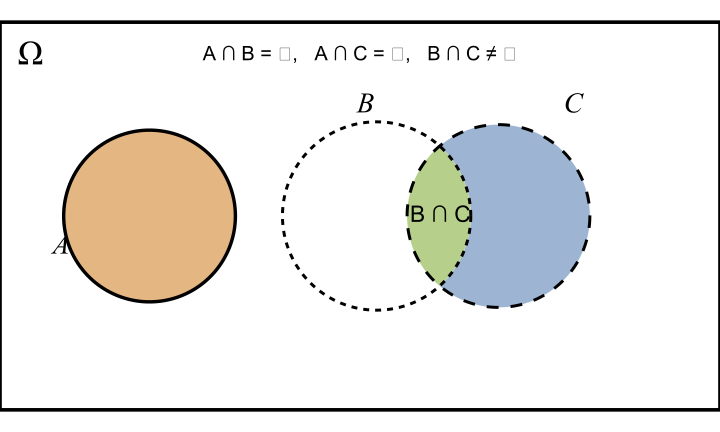

Elementos de Probabilidade
Conteúdo
- Espaço de Probabilidades
- Espaço Amostral
- Conjuntos
- Relações entre Conjuntos
- Operações entre Conjuntos
- Eventos Disjuntos e Partições
- Espaço de Eventos
- Função de Probabilidade
- Probabilidade Condicional
Referências:
- MB10
- CB01
Espaço de Probabilidades
Um espaço de probabilidades é uma tripla \((\Omega, \mathcal{F}, P)\).
- O conjunto \(\Omega\) é chamado espaço amostral. Os elementos de \(\Omega\) são todos os possíveis resultados individuais de nosso experimento.
- O conjunto \(\mathcal{F}\) é a \(\sigma\)-álgebra de eventos, ou espaço de eventos. São os resultados (ou conjunto de resultados) de interesse. O espaço de eventos \(\mathcal F\) é formado por subconjuntos do espaço amostral \(\Omega\). Temos alguns requerimentos sobre a estrutura do conjunto \(\mathcal{F}\).
- \(\Pr\) é uma função de probabilidade, ou distribuição de probabilidade, que atribui pesos relativos aos elementos de \(\mathcal{F}\).
Uma variável aleatória \(X\) é uma função que mapeia os elementos do espaço amostral \(\Omega\) a valores na reta real.
Espaço Amostral
O conjunto \(\Omega\), composto por todos os possíveis resultados individuais \(\omega \in \Omega\) de um experimento é chamado de espaço amostral desse experimento.
Considere um único lançamento de um dado cúbico. O espaço amostral \(\Omega\) é o conjunto que elenca os possíveis resultados individuais obtidos com o lançamento do dado: \[\begin{align*} \Omega = \{\unicode{x2680},\unicode{x2681},\unicode{x2682},\unicode{x2683},\unicode{x2684},\unicode{x2685}\}. \end{align*}\]
Evento
Um evento \(A\) é qualquer subconjunto do espaço amostral \(\Omega\). Ou seja, qualquer coleção de possíveis resultados para o experimento, incluindo o próprio espaço amostral e o conjunto vazio. \(A\subset\Omega\).
Continuando com nosso dado. Vamos definir alguns eventos relacionados ao experimento de (um) lançamento do dado.
- Resultado é menor do que três: \(X = \{\unicode{x2680}, \unicode{x2681}\}\).
- Resultado é par: \(Y = \{\unicode{x2681}, \unicode{x2683}, \unicode{x2685}\}\).
- Resultado é menor do que seis: \(Z = \{\unicode{x2680},\unicode{x2681},\unicode{x2682},\unicode{x2683},\unicode{x2684}\}\).
Conjuntos
Vamos dar um passo atrás e lembrar a definição e as principais operações entre conjuntos.
Um conjunto é uma coleção de elementos. Existem várias formas de definir um conjunto.
- Verbalmente: \(S\) é o conjunto de todos os cisnes que não são negros. \(A\) é o conjunto composto por todos os números pares.
- Por enumeração: \(Z = \{2, 4, 6, 8, 10, 12, 14, ...\}\).
- Via notação de conjuntos: \(Z = \{ z: z=2n, n \in \mathbb{N}\}\)
Relações entre conjuntos
Um conjunto se relaciona com seus elementos por meio da pertinência. A relação básica entre conjuntos é a contenção. Com base nesse conceito, definimos a relação de igualdade entre conjuntos, e então conseguimos definir operações operações entre conjuntos como união, intersecção, e complemento.
Pertinência
A pertinência é a relação entre um elemento e um conjunto. Se um elemento \(x\) pertence a um certo conjunto \(A\) escrevemos \(x \in A\). Alternativamente, se esse elemento \(x\) não pertencer a \(A\) escrevemos \(x \notin A\).
Contenção
Dizemos que \(A\) está contido em \(B\), ou, equivalentemente, que \(B\) contém \(A\), se todos os elementos de \(A\) também forem elementos de \(B\). Escrevemos \(A \subset B\). Ou seja,
\[\begin{align*} A \subset B \Longleftrightarrow (x\in A \Longrightarrow x \in B). \end{align*}\]
Exemplos
- Se \(\Omega = \{\unicode{x2680}, \ldots, \unicode{x2685}\}\) e \(X = \{\unicode{x2680}, \unicode{x2681}, \unicode{x2682}\}\), então \(X\subset \Omega\).
O conjunto vazio \(\emptyset\)
Definimos um conjunto vazio como o único conjunto que não contém nenhum elemento:
\[\begin{align*} \emptyset = \{\}. \end{align*}\]
Por suposição, o conjunto vazio é subconjunto de qualquer outro conjunto. Ou seja,
\[\begin{align*} \emptyset \subset A, \quad \forall A. \end{align*}\]
Ressaltando que a suposição anterior não quer dizer que o conjunto vazio é elemento de qualquer outro conjunto. Ou seja, não é verdade que sempre \(\emptyset \in A\). O conjunto vazio é elemento de outro conjunto apenas quando aparecer explicitamente listado como elemento.
Igualdade
Dizemos que \(A\) é igual a \(B\) se tivermos, simultaneamente, que \(A\) é contido em \(B\) e que \(B\) é contido em \(A\). Escrevemos \(A = B\). Ou seja,
\[\begin{align*} A = B \Longleftrightarrow (A \subset B \text{ e } B \subset A). \end{align*}\]
Em outras palavras, temos \(A=B\) apenas se tivermos que, simultaneamente,
- se \(x \in A\) então \(x \in B\), e
- se \(x \in B\) então \(x \in A\).
Diferença entre \(\subset\) e \(\subseteq\)
Uma ressalva sobre notação.
Paradoxo de Russell
Quase qualquer conjunto pode ser definido, mas temos que tomar um pouco de cuidado ao definir conjuntos com base nos elementos que não fazem parte de tal conjunto.
Tome o conjunto
\[\begin{align*} A = \{ x: x\notin A\}. \end{align*}\]
Considere um certo elemento \(x\), pertencente a \(A\). Se \(x \in A\), então deve respeitar o predicado \(x \notin A\). Portanto concluimos que \(x\) não pertence a \(A\). Alternativamente, tome \(x \notin A\). Mas nesse caso \(x\) respeita o predicado e portanto \(x \in A\). Perceba que não conseguimos decididir se o elemento \(x\) pertence, ou não, a esse conjunto \(A\). Essa contradição é conhecida como Paradoxo de (Bertrand) Russell.
Operações entre Conjuntos
União (\(\cup\), \(\vee\), ou)
A união entre \(A\) e \(B\), denotada \(A \cup B\), é o conjunto composto por todos os elementos pertencentes a \(A\), pertencentes a \(B\), ou pertencentes a ambos \(A\) e \(B\). \[\begin{align*} A \cup B = \{x: x\in A \text{ ou } x \in B\}. \end{align*}\] A união é associada ao operador lógico ou.
Intersecção (\(\cap\), \(\wedge\), e)
A intersecção entre os conjuntos \(A\) e \(B\), denotada \(A\cap B\), é o conjunto dos elementos que pertencem a ambos \(A\) e \(B\): \[\begin{align*} A\cap B = \{x: x\in A \text{ e } x\in B\}. \end{align*}\]
A intersecção é relacionada ao operador lógico e.

Complementação (\(A^c\), não)
O complemento do conjunto \(A\) (com relação a todo o universo \(\Omega\)) é o conjunto composto por todos os elementos em \(\Omega\) que não pertencem ao conjunto \(A\).
\[\begin{align*} A^c = \{ x: x\notin A\} \end{align*}\]

Complementação relativa (\(\setminus\), subtração)
O complemento relativo do conjunto \(A\) com relação ao conjunto \(B\), escrito \(A\setminus B\) ou \(A-B\) (podemos ler como \(A\) menos \(B\)), é o conjunto de todos os elementos presentes em \(A\) mas não presentes em \(B\).
\[\begin{align*} A\setminus B = \{x: x\in A \text{ e } x \notin B\} \end{align*}\]

Propriedades básicas das operações entre conjuntos
Tome três eventos \(X\), \(Y\), e \(Z\), definidos no mesmo espaço amostral \(\Omega\).
- Comutatividade
\[\begin{align*} X \cup Y &= Y \cup X \\ X \cap Y &= Y \cap X \end{align*}\]
- Associatividade
\[\begin{align*} X\cup(Y\cup Z) &= (X\cup Y)\cup Z \\ X\cap(Y\cap Z) &= (X\cap Y)\cap Z \end{align*}\]
- Leis Distributivas
\[\begin{align*} X \cup(Y\cap Z) &= (X\cup Y)\cap(X\cup Z) \\ X \cap(Y\cup Z) &= (X\cap Y)\cup(X\cap Z) \end{align*}\]
- Leis de deMorgan
\[\begin{align*} (X \cup Y)^c &= X^c\cap Y^c \\ (X \cap Y)^c &= X^c\cup Y^c \end{align*}\]
Eventos Disjuntos e Partições
Definição: Eventos disjuntos
Dizemos que dois eventos \(A\), \(B\) são disjuntos (ou mutuamente exclusivos) se \(A\cap B=\emptyset\).
Dizemos que os eventos enumerados na sequência \(A_1, A_2, \dots\) são disjuntos dois a dois se \(A_i\cap A_j=\emptyset\) para qualquer \(i\neq j\).

[figura eventos disjuntos]
Definição: Partição de um conjunto
Seja \(A_1, A_2, \dots\) uma sequência de eventos disjuntos dois a dois e suponha que \(\cup^\infty_{j=1}A_j=X\). Dizemos então que a sequência de conjuntos \(A_1, A_2, \dots\) forma uma partição do conjunto \(X\).
Exemplos de partições
Uma partição finita do espaço amostral \(\Omega\)

Uma partição infinita do espaço amostral \(\Omega\)

Dados \(A,B\subset\Omega\), sempre conseguimos particionar \(A\) ao escrever \(A = (A\cap B)\cup (A\cap B^c)\).

Espaço de Eventos
Definição: Espaço de eventos
O conjunto \(\mathcal{F}\), cujos elementos são subconjuntos de \(\Omega\) é chamado \(\sigma\)-álgebra ou espaço de eventos em se:
- O conjunto vazio é elemento de \(\mathcal{F}\)
- \(\mathcal{F}\) é fechado sob complementação
- \(\mathcal{F}\) é fechado sob uniões contáveis
Exemplo: Menor \(\sigma\)-álgebra possível
Exemplo: Segunda menor \(\sigma\)-álgebra possível
Exemplo: Maior \(\sigma\)-álgebra possível
Exemplo: Espaço de eventos definido sobre um espaço amostral incontável
Função de Probabilidade
Dados um espaço amostral \(\Omega\) e um associado espaço de eventos \(\mathcal{F}\), uma função de probabilidade \(\Pr(\cdot)\) é qualquer função com domínio no espaço de eventos \(\mathcal{F}\) e contradomínio nos números reais \(\mathbb{R}\) que satisfaz as propriedades (axiomas):
- A1 (Não-negatividade): \(\Pr(A)\geq 0, \forall A\in \mathcal{F}\).
- A2 (Normalização unitária): \(\Pr(\Omega)=1\).
- A3 (Aditividade finita): Sejam \(A\) e \(B\) eventos disjuntos. Ou seja, que \(A \cap B=\emptyset\). Então \[\begin{align*} \Pr(A \cup B) = \Pr(A) + \Pr(B). \end{align*}\]
Propriedades elimentares
Probabilidade Condicional e Independência entre Eventos
Probabilidade condicional
Definição: Probabilidade condicional
Tome \(A\) e \(B\) eventos devinidos no espaço amostral \(\Omega\). Assuma \(\Pr(B)>0\). Então a probabilidade condicional do evento \(A\) dada a ocorrência do evento \(B\) é
\[\begin{align*} \Pr(A|B)=\frac{\Pr(A\cap B)}{\Pr(B)}. \end{align*}\]
Lei da Probabilidade Total
Seja \(A_1, A_2, \dots, A_n\) uma partição do espaço amostral \(\Omega\), e seja \(B\) um evento qualquer. Então podemos escrever
\[\begin{align*} \Pr(B) = \Pr(B|A_1)\Pr(A_1)+\Pr(B|A_2)\Pr(A_2)+\cdots+\Pr(B|A_n)\Pr(A_n). \end{align*}\]
Teorema de Bayes
Tome \(A,A^c\) formando uma partição de \(\Omega\) e \(B\) um evento qualquer. Então \[\begin{align*} \Pr(A|B) = \frac{\Pr(B|A)\Pr(B)}{\Pr(B|A)\Pr(A)+\Pr(B|A^c)\Pr(A^c)}. \end{align*}\]
Seja \(A_1,A_2,\dots,A_n\) uma partição de espaço amostral \(\Omega\) e seja \(B\) um evento qualquer. Então
\[\begin{align*} \Pr(A_j|B) = \frac{\Pr(B|A_j)\Pr(A_j)}{\sum^n_{i=1}\Pr(B|A_i)\Pr(A_i)} \end{align*}\]
Exemplo:
Suponha que 5% dos homens e 0.25% das mulheres sejam dautônicos. Uma pessoa escolhida aleatoriamente é dautônica. Qual é probabilidade de que essa pessoa seja homem? (Assuma mesma incidência de homens e mulheres na população.)
Expand To Learn About Collapse
This is an example of a ‘folded’ caution callout that can be expanded by the user. You can use collapse="true" to collapse it by default or collapse="false" to make a collapsible callout that is expanded by default.
Solução
Defina os seguintes eventos:
- \(H\): o indivíduo é homem.
- \(H^c\): o indivíduo é mulher.
- \(D\): o indivíduo é dautônico.
- \(D^c\): o indivíduo não é dautônico.
Uma pessoa escolhida aleatoriamente é dautônica. Qual é probabilidade de que essa pessoa seja homem?
Queremos \(\Pr(H|D)\).
O enunciado nos diz: Assuma mesma incidência de homens e mulheres na população. Então \(\Pr(H)=\Pr(H^c)=0.5\).
Ainda do enunciado: Suponha que 5% dos homens e 0.25% das mulheres sejam dautônicos. Ou seja, \(\Pr(D|H)=0.05\) e \(\Pr(D|H^c)=0.0025\).
Da definição de probabilidade condicional,
\[\begin{align*} \Pr(H|D) = \frac{\Pr(D|H)\Pr(H)}{\Pr(D)}. \end{align*}\]
Pelo teorema da probabilidade total
\[\begin{align*} \Pr(D) = \Pr(D|H)\Pr(H) + \Pr(D|H^c)\Pr(H^c). \end{align*}\]
Então escrevemos o teorema de Bayes e substituimos valores
\[\begin{align*} \Pr(H|D) &= \frac{\Pr(D|H)\Pr(H)}{\Pr(D|H)\Pr(H) + \Pr(D|H^c)\Pr(H^c)} \\ &=\frac{0.05\times 0.5}{0.05\times 0.5+0.0025\times 0.5}\\ &=0.952381 \end{align*}\]
Exemplo:
Considere o problema de um teste clínico para a presença de uma certa doença.
- Se o indivíduo não estiver infectado, o teste tem probabilidade de 5% de apontar um falso positivo.
- Se o indivídio estiver, de fato, doente, o teste tem probabilidade de 1% de apontar um falso negativo.
- Acreditamos que, na população, 25% dos indivíduos estejam infectados.
Um indivíduo realizou o teste e o resultado foi negativo. Qual é a probabilidade desse indivíduo estar infectado pela doença?
Exemplo: Problema dos três prisioneiros
Três prisioneiros, \(A\), \(B\), e \(C\) estão no corredor da morte. Um deles, já escolhido aleatoriamente, será perdoado. O diretor da prisão conta ao carcereiro quem será perdoado, mas pede que a identidade do prisioneiro perdoado permaneça em segredo.
Mais tarde naquele dia, o prisioneiro \(A\) pergunta ao carcereiro quem será perdoado. O carcereiro se recusa a responder. Insistente, o prisioneiro \(A\) então pergunta: “entre \(B\) e \(C\), qual dos dois será executado?”. O carcereiro pensa um pouco e responde: “\(B\) será executado”.
- Raciocínio do prisioneiro \(A\): Sei que \(B\) será executado, então um entre \(A\) e \(C\) será perdoado. Minhas chances de sobrevivência são 1/2.
- Raciocínio do carcereiro: Cada prisioneiro tem probabilidade 1/3 de ser perdoado. Claramente entre \(B\) e \(C\) um deles será executado. Portanto não dei nenhuma informação adicional ao prisioneiro \(A\).
Quem está correto nessa situação?
Exemplo: Problema de Monty-Hall
Em um programa de auditório, três portas \(A,B,C\) fechadas lhe são oferecidas. Atrás de apenas uma delas se encontra um prêmio. Você ganha o prêmio se escolher a porta correta.
- Você escolhe uma entre as portas \(A,B,C\).
- Monty, que sabe atrás de qual porta está o prêmio, abre uma das portas que você não escolheu e mostra que o prêmio não estava atrás dessa porta.
- A você, então, é oferecida a oportunidade de trocar a porta escolhida para a outra porta fechada restante.
Você deve trocar? Faz alguma diferença para sua probabilidade de obter o prêmio?
Independência entre dois eventos
Definição: Independência entre dois eventos
Dizemos que dois eventos \(A,B\subset\Omega\) são independentes se
\[\begin{align*} \Pr(A\cap B) = \Pr(A)\Pr(B). \end{align*}\]
Independência entre vários eventos
A definição de independência entre dois eventos é bem direta e fácil de se checar. Quando estamos tratando de uma coleção de eventos, os requerimentos para independência se tornam mais rigorosos.
Definição: Independência entre uma coleção de eventos
Uma coleção de eventos \(A_1, \dots, A_n\) são ditos (mutuamente) independentes se, para qualquer subcoleção \(A_{i_1}, A_{i_2}, \dots, A_{i_k}\), tivermos
\[\begin{align*} \Pr\left( \cup^k_{j=1} A_{i_j} \right) = \prod_{j=1}^k \Pr(A_{i_j}). \end{align*}\]
Por exemplo, tome \(A,B,C \subset \Omega\). A coleção \(A,B,C\) é dita independente se tivermos que, simultaneamente,
\[\begin{align*} \Pr(A\cap B) &= \Pr(A)\Pr(B), \\ \Pr(A\cap C) &= \Pr(A)\Pr(C), \\ \Pr(B\cap C) &= \Pr(B)\Pr(C), \\ \Pr(A\cap B\cap C) &= \Pr(A)\Pr(B)\Pr(C). \end{align*}\]
Analogamente, a independência entre uma coleção \(A,B,C,D\) com quatro eventos definidos em \(\Omega\), requer \({4\choose 2}=6\) condições de independência “dois a dois”, \({4\choose 3} = 4\) condições de independência “três a três”, e \({4\choose 4}=1\) condição de independência “quatro a quatro”.
Exemplo:
Considere o espaço amostral composto pelas \(3!\) permutações das letras \(a,b,c\), combinadas com as três repetições de cada letra. Ou seja,
\[\begin{align*} S = \left\{\begin{matrix} (a,a,a), & (b,b,b), & (c,c,c), \\ (a,b,c), & (b,c,a), & (c,b,a), \\ (a,c,b), & (b,a,c), & (c,a,b) \end{matrix}\right\}. \end{align*}\]
Atribua probabilidade \(1/9\) a cada elemento de \(S\). Defina o evento \[\begin{align*} A_j = \{\text{a } j-\text{ésima entrada da tripla é ocupada por um } a\}. \end{align*}\] Ou seja, \[\begin{align*} A_1 &= \{(a,a,a), (a,b,c), (a,c,b)\}, \\ A_2 &= \{(a,a,a), (b,a,c), (c,a,b)\}, \text{ e }\\ A_3 &= \{(a,a,a), (b,c,a), (c,b,a)\}. \end{align*}\]
- O que podemos afirmar sobre a independência entre \(A_1\) e \(A_2\)?
- E sobre a independência mútua entre \(A_1, A_2\) e \(A_3\)?